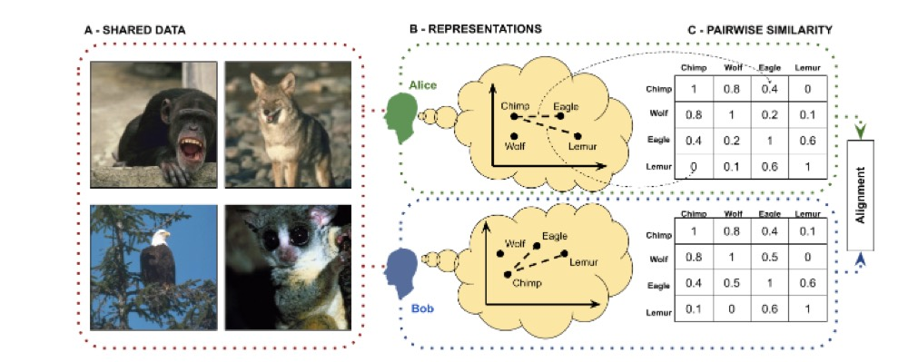
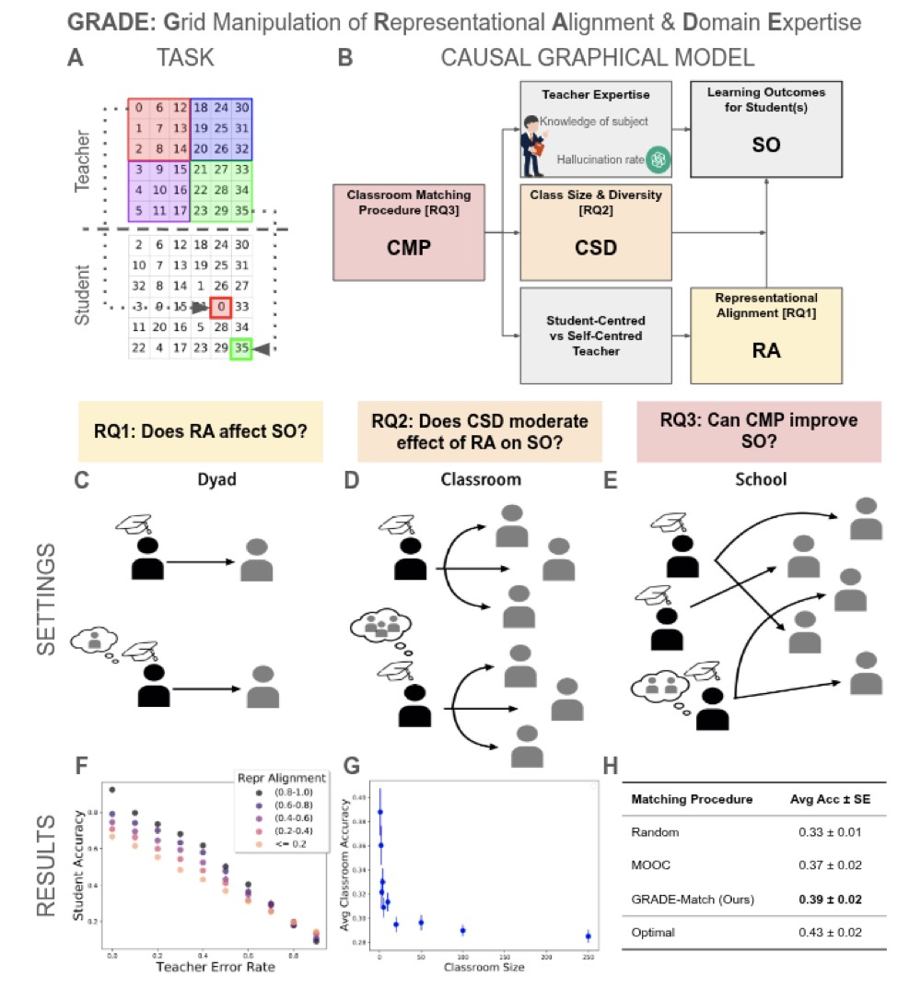
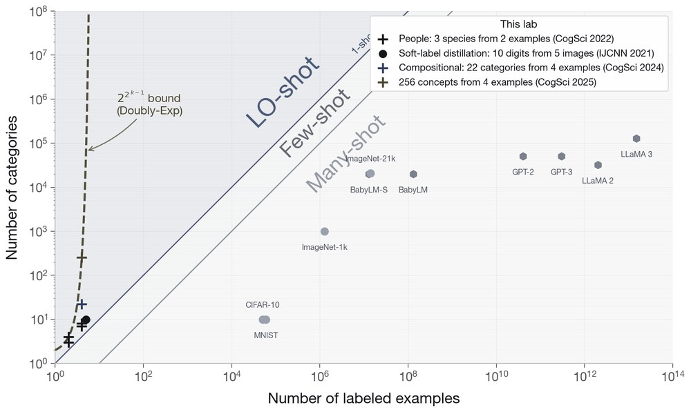

What two minds share sets how little has to be said.
Representational alignment is how much two agents agree about what is similar to what. It sets the cost of learning from each other, and the floor on that cost is lower than most people expect.
What alignment is.
Two agents are aligned to the extent that they agree about what is similar to what. The lab measures that agreement directly, by putting the same similarity questions to people and to models, and then asks what the agreement buys.
Alignment is agreement about what is similar to what.
The NeurIPS 2023 paper describes a representation by its similarity judgments, whether an item is closer to a second item than to a third, and defines the alignment of two agents as how far those judgments agree. Scored that way against more than 425,000 human similarity judgments, 491 vision models spread across the whole range. Alignment is a quantity a pair has more or less of, and it can be measured before either side has learned anything from the other.

Measure alignment yourself
This is the measurement in the figure above, in miniature. We ask which of two colours is closer to a third; sixteen answers give your similarity structure over eight colours, drawn beside Claude Fable 5.1's answers to the same questions, and the correlation between the two is your alignment with that model. The question is the one used in Large language models predict human sensory judgments across six modalities (Scientific Reports, 2024), where GPT-4's colour judgments reached r = .84 with people's.
What the paper found
The paper put pairwise similarity questions to GPT-3, GPT-3.5 and GPT-4 for six kinds of sensory stimuli, pitch, loudness, colour, vocal consonants, taste and timbre, and compared the answers with human judgments. GPT-4's correlations with people were r = .92 for pitch, .89 for loudness and .84 for colours, and lower for consonants (.57), taste (.54) and timbre (.42). Multidimensional scaling of the model's judgments recovers the colour wheel and the pitch helix with its octave peaks. GPT-4's gain over the earlier models was about the same size in every modality, so multimodal training is not what drives it.
What you just did
You answered sixteen triplet questions, which of two colours is closer to a reference. Each answer adds a count for the pair you chose, and the left matrix fills in as your similarity structure over eight colours. The right matrix holds Claude Fable 5.1's ratings for the same 28 pairs, collected with the paper's pairwise prompt, and the correlation between the two is your alignment with that model, the quantity the rest of this page is about.
Your similarity matrix
Claude Fable 5.1
Alignment buys fast learning.
When a teacher and a student share a representation, each message lands where it was aimed. The evidence below runs from 491 vision models, to a theorem about teaching over a noisy channel and a game built on it, to people teaching each other on a number grid, to an agent learning what people value.
Medium alignment can underperform both low and high alignment.
Across 491 vision models, few-shot learning followed a U-shaped relationship with alignment to human similarity judgments, and robustness under domain shift followed the same U. The most-aligned models were also the most robust to natural adversarial examples.
Why alignment is U-shaped.
When a teacher and a student see the world differently, teaching takes longer, but only up to a point. The paper's theorem says a student who disagrees with the teacher on half of all similarity judgments can learn nothing, while a student who disagrees on nearly all of them can flip every message and learn as fast as one who agrees. We care because how much a person and an AI share in how they see things sets how cheaply they can teach each other. Here you set the disagreement rate and watch how much the student needs to be told.
What the paper found
Supervision from a teacher to a student is modelled as a noisy channel whose flip rate ε is the misalignment, so the bits a student needs scale as d log n / C(ε), largest at ε = 0.5 and smallest at ε = 0 or 1. Across 491 ImageNet-1k models scored against more than 425,000 human similarity judgments, the five most aligned models beat the middle five and the bottom five at every shot count on CIFAR-100 and on every robustness set. On ImageNet-A, top-1 accuracy was 59.9 for the high group, 10.3 for the middle group and 30.9 for the low group. Alignment explained about 20% of one-shot variance in distribution.
What you just did
You moved along the theorem. At ε = 0 the teacher's triplets are the student's, so every label lands where it should; at ε = 1 every triplet is flipped, which is the same message with its sign reversed, and a student who knows that decodes it just as cheaply. At ε = 0.5 each flip is a coin toss, the channel carries nothing, and no number of labels is enough. The middle group of models in the paper, at 10.3 on ImageNet-A against 59.9 and 30.9 for the ends, is that trough.
Drag the first slider to set how often the teacher's judgments disagree with the student's.
Teach a location with yes-or-no questions.
Two people each have their own mental map of the same familiar objects. One sees a new object and may only say things like "it is closer to A than to F"; the other has to work out where it is. Each message is worth up to one bit, and it is worth that much only when it splits what the receiver still believes in half on the receiver's map, so any gap between the two maps shows up as messages that miss. Here you play either role and count how many messages it takes.
What the paper found
Each message of the form "closer to this than to that" cuts the receiver's map in half along the line midway between the two objects. When the two maps agree, about log n messages pin the object down; when they disagree on a fraction ε of such judgments, each message carries only C(ε) of a bit and the count grows as 1 / C(ε). A receiver who knows that most messages arrive reversed can flip them all and learn as fast as an aligned pair.
What you just did
As the teacher you chose which pairs to ask about without seeing how the student would read them; the good pairs are the ones whose midline splits what the student still believes in half, on the student's map. As the student you decoded messages that were true on a map you could not see. Revealing the other player's map is a shortcut the paper's theorem does not allow, and it is worth trying: an accurate model of the other player can substitute for agreeing with them.
Eight familiar objects, A to H, sit on each player's map, and the two maps do not quite agree. Messages take one form only: "the new object is closer to A than to F", judged on the sender's own map. Choose a role. The slider sets how different the two maps are.
Teaching as a function of alignment.
In the GRADE study, a teacher and a student work on a number grid. Student accuracy falls as the teacher's error rate rises, and rises with representational alignment between the two; assigning students to teachers by alignment beats random and course-style assignment.

Learning values with aligned representations.
An agent that learns what people value has to guess about actions it has never tried, and it does that by knowing which actions resemble each other. The paper shows that the closer the agent's sense of similarity is to a person's, the faster it learns their values and the fewer bad actions it takes along the way. We care because getting an AI to see things the way a person does may matter more than showing it more examples. Here you set how accurate the agent's similarity table is and watch it learn.
Each turn the agent picks one of 50 actions and gets a score back; scores below 50 count as bad. The slider sets how accurate its table of similar actions is: at 1 the table is right, at 0 it is scrambled.
Score of the action taken each turn, averaged over 30 runs
Bad actions taken so far, averaged over 30 runs
| Similarity table | Match with truth | Score, first 25 turns | Bad, first 25 | Score, new 25 actions | Bad, new 25 |
|---|
What the paper found
Bandit agents learned a scalar value function by Thompson sampling over 50 actions, with a frozen similarity kernel guiding their guesses about untried actions. In more than 2,300 synthetic runs with corrupted kernels, reward fell and bad actions rose as alignment dropped, with a crossover below which a representation is worse than plain Thompson sampling. On human morality scores for 50 actions rewritten from ETHICS Justice, higher representational alignment gave higher reward and fewer immoral actions in both phases, and the effect held for 9 of 10 rated values.
What you just did
You varied the one thing the paper's theory is about, how well the agent's similarity matches the true one, and watched both of its metrics move. The paper's finding was that reward falls and bad actions rise as alignment drops, in the personalisation phase and again in generalisation, with a crossover below which the kernel is worse than plain Thompson sampling; with human morality scores the more aligned representations gave higher reward and fewer immoral actions in both phases.
How little is enough.
Shared representations set how much a learner needs to be told. The floor is lower than most people expect. The lab introduced less-than-one-shot learning, where a learner extracts more categories from a training set than there are examples in it ('Less Than One'-Shot Learning, AAAI 2021), and has since mapped how far that goes for machines and for people.

Two examples can teach three classes.
A classifier usually needs at least one example of every class it is meant to recognise. If each example carries a mix of labels, saying how much it belongs to each class, two examples can mark out three classes, and a few examples can mark out many more. We care because a teacher and a learner who share a space can say a lot with a few well-placed examples, and this is one route to machines that learn new categories from as few examples as people do. Below, the two dots are the only examples the classifier has seen; drag them or move the sliders, and count the coloured stretches of the line.
What the paper found
A nearest-neighbour classifier whose prototypes carry a probability over classes instead of a single label can separate more classes than it has prototypes. Two prototypes 3 units apart with labels (3/5, 2/5, 0) and its mirror separate three classes (Theorem 1). For N concentric circles, hard-label nearest neighbour needs on the order of N squared prototypes; the soft-label version separates six circles with five.
What you just did
You built the two-prototype classifier from Theorem 1 and read off its decision regions. A third region appears because, between the prototypes, both labels count and class 2 is the runner-up in each of them: their two second places add up to a first place, which happens exactly when the weight on class 2 is above one third.
Learning 256 concepts from four examples.
A few examples can carry a lot if a teacher chooses them well. In the paper, four alien pictures and eight made-up words were enough for people to learn eight body features and combine them into 256 possible aliens. We study this because a partner that teaches should be able to say a great deal with a handful of well-chosen examples. Here you learn the eight words from the four aliens, then label six new ones.
Press a word and the aliens it applies to light up. Write what you think each word means next to it.
New alien 1 of 6. Press every word that describes it, then press Label this alien.
What the paper found
Four well-chosen aliens can distinguish 24−1 = 8 binary features, and those compose into 28 = 256 concepts. Participants learned the features at 0.65 accuracy from the four examples, and 23 of 48 inferred "yolm", the feature present in all four with no negative example. They then labelled a new alien fully correctly 0.40 of the time, against 0.20 for a control group that skipped the examples (p = 0.02). OpenAI o1 scored 0.76 with the examples and 0.50 without.
What you just did
You learned by compare and contrast: a word's meaning is whatever the aliens it applies to share and the others lack, so each pointing gesture rules out every feature that fails to split the group that way. The examples came from a cooperative teacher who chose four aliens so that every feature splits them differently, which is what lets eight words, and 256 combinations of them, ride on four pictures. The score the paper reports is the share of new aliens labelled fully correctly, 0.40 with the examples against 0.20 without, and the paper found that o1 benefited from the same scaffolding, 0.76 against 0.50.
Three categories from two examples.
People can learn a category without ever seeing an example of it. In the paper, two dinosaurs came with mixed labels such as 60% species 1, 30% species 2, 10% species 3, and people then sorted new dinosaurs into all three species, including the one neither example mostly belonged to. We care because partial, uncertain labels are how people and machines often describe things to each other. Here you see two example creatures with mixed labels and sort twelve new ones.
What the paper found
70 participants saw two dinosaurs with soft labels and classified 20 new ones from each of two shape families, with 14 different label pairs. Their answers followed the labels: a participant agreed with their own answers across the two families 74.1% of the time and with other participants 68.2%, against 33.3% by chance. A prototype model with three fitted prototypes fit the responses best (R² = .61), ahead of exemplar models using the nearest one (.28) or two (.30) examples.
What you just did
You did the paper's task on a plane instead of a line: two examples, three species, and a series of new creatures to sort. The paper's question was whether people's answers follow the soft labels at all, and which model of the learner predicts them; its answer was that they do, and that three prototypes predict people better than the examples themselves do.
Twelve new creatures arrive one at a time. Pick the species each most likely belongs to.
Compare with a model
Where every creature sits. Longer neck to the right, longer legs upward. The one you are sorting now is marked.
Papers on this page